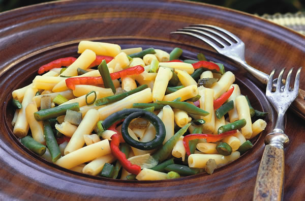

ROB CARDILLO (2)
Kitchen gardeners will love both the pods and the dry beans of the ‘Beurre de Rocquencourt’ yellow wax bean (black seeds) and the green rice bean ‘Comtesse de Chambord’ (white seeds).